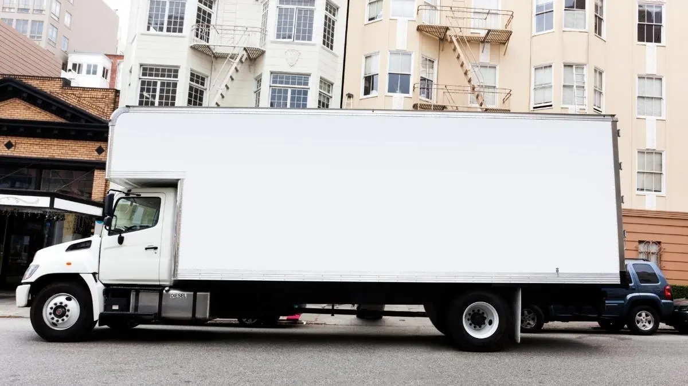

دينا نقل عفش حي السويدي بأفضل الأسعار 0541145506

حي السويدي في الرياض من الأحياء الحيوية التي تشهد حركة سكانية وتجارية نشطة، مما يجعل الحاجة إلى خدمات نقل الأثاث أمراً ضرورياً. عند الانتقال إلى منزل جديد أو تجديد الأثاث، يصبح من المهم العثور على وسيلة آمنة وفعالة تضمن إنجاز المهمة بسرعة مع الحفاظ على سلامة الممتلكات. وهنا تأتي أهمية خدمات شركة نقل الرياض، التي توفر حلولاً احترافية وموثوقة لنقل الأثاث بأمان وتقدم شركة نقل الرياض خدمة دينا نقل عفش حي السويدي يمكنكم التواصل عبر رقم 0541145506
خدمات دينا نقل عفش حي السويدي
تقدم شركة نقل الرياض خدمة دينا نقل عفش حي السويدي، التي تتيح نقل الأثاث بكفاءة عالية داخل الحي، مستفيدة من سيارات النقل المجهزة والتي يمكنها التنقل بسهولة في الشوارع المزدحمة. هذه الخدمة مثالية لنقل الأثاث الثقيل أو القطع الحساسة، حيث توفر الشركة فريق عمل محترف يستخدم أحدث تقنيات الحماية والتغليف لتقليل المخاطر المحتملة مثل الخدوش أو الكسر.
ونيت نقل عفش حي السويدي لحلول مرنة
بالإضافة إلى دينا نقل عفش حي السويدي، توفر شركة نقل الرياض خدمة ونيت نقل عفش، وهي خيار مثالي للأشخاص الذين يحتاجون إلى نقل كميات أقل من الأثاث بسرعة وسهولة. يتميز الونيت بالقدرة على الوصول إلى المناطق الضيقة داخل الحي، مما يسهل عمليات التحميل والتفريغ دون أي تأخير.
لماذا تحتاج حي السويدي إلى خدمات نقل محترفة؟
نظرًا للكثافة السكانية العالية وتعدد المجمعات السكنية في حي السويدي، فإن الحاجة إلى خدمات نقل موثوقة أصبحت ضرورية. توفر شركة نقل الرياض حلولاً متكاملة تشمل فك وتركيب الأثاث، التغليف، والنقل باستخدام سيارات مجهزة بالكامل مثل دينا نقل عفش حي السويدي لضمان راحة العملاء.
أهمية اختيار دينا نقل عفش حي السويدي من شركة نقل الرياض
- الاحترافية والخبرة: تعتمد الشركة على فريق مدرب لضمان تنفيذ عمليات النقل بأمان وكفاءة.
- معدات وتقنيات حديثة: تستخدم مواد تغليف متطورة وأدوات خاصة لحماية الأثاث أثناء النقل.
- التزام بالمواعيد: تقدم خدمات سريعة وفق جدول زمني دقيق.
- أسعار تنافسية: توفر الشركة خدماتها بأسعار مناسبة دون التأثير على جودة الخدمة.
حلول نقل متطورة بأعلى معايير الجودة
توفر شركة نقل الرياض فريق عمل متخصص يتمتع بخبرة واسعة في فك وتركيب الأثاث مع استخدام أحدث تقنيات التغليف لحماية القطع من الخدوش أو الكسر أثناء النقل. كما توفر دينا نقل عفش حي السويدي لخدمة العملاء الذين يحتاجون إلى نقل الأثاث داخل الحي بسهولة ودقة.
إقرا ايضا:خدمات نقل العفش في ظهرة لبن 0541145506
أمان وكفاءة في جميع مراحل النقل
تضمن الشركة التعامل مع جميع أنواع الأثاث من القطع الخفيفة إلى الخزائن الضخمة باستخدام أدوات متخصصة لتجنب أي تلف. يتم تثبيت الأغراض داخل المركبات بطريقة تضمن عدم تحركها أثناء السير، مما يجعل دينا نقل عفش حي السويدي الخيار الأمثل لمن يبحث عن خدمة موثوقة وآمنة.
أفضل الممارسات لنقل العفش بأمان
من الضروري اتباع خطوات مدروسة أثناء عملية نقل الأثاث لضمان عدم تعرضه للتلف. تستخدم دينا نقل عفش حي السويدي أحدث الأساليب في تعبئة وتغليف الأثاث، مثل استخدام الفوم الواقي، الأشرطة اللاصقة، والبطانيات العازلة التي تمنع حدوث أي خدوش أو تصادم بين القطع. كما أن التنظيم الجيد داخل المركبة أثناء النقل يساهم في تثبيت الأثاث ويمنع تحركه المفاجئ أثناء السير.
تجهيز الأثاث قبل عملية النقل
قبل نقل الأثاث، يجب القيام ببعض التجهيزات الأساسية مثل تفكيك القطع الكبيرة، وترقيم الصناديق لضمان ترتيبها بسهولة عند الوصول. توفر دينا نقل عفش حي السويدي خدمة فك وتركيب احترافية تسهل على العملاء ترتيب ممتلكاتهم بمجرد وصولها إلى المكان الجديد. كما أن استخدام الأدوات الحديثة مثل الروافع والعربات المتحركة يسهم في تقليل الجهد البدني ويحمي الأثاث من أي تلف محتمل.
إقرا ايضا:شركة تنظيف مكيفات حي ظهرة لبن | شركة صيانة مكيفات حي ظهرة لبن 0541145506
أهمية اختيار شركة ذات سمعة طيبة
عند البحث عن خدمة نقل أثاث، من الضروري اختيار شركة ذات سمعة طيبة وخبرة طويلة في المجال. تتميز دينا نقل عفش حي السويدي من شركة نقل الرياض بسجل حافل من العملاء الراضين، مما يجعلها الخيار الأمثل لكل من يبحث عن خدمة نقل موثوقة وآمنة. فالشركة تعتمد على فرق مدربة وسيارات نقل مجهزة بأحدث الوسائل لضمان إنجاز المهمة بكفاءة دون أي مشاكل.
تقنيات متطورة لضمان سلامة الأثاث أثناء النقل
تولي شركة نقل الرياض اهتمامًا كبيرًا بسلامة الأثاث أثناء النقل، ولذلك تعتمد على أحدث التقنيات لضمان حماية العفش من أي ضرر. توفر الشركة خدمة دينا نقل عفش حي السويدي المجهزة بأنظمة تثبيت متطورة تمنع تحرك الأثاث أثناء الرحلة، مما يقلل من مخاطر الخدوش أو الكسر. بالإضافة إلى ذلك، يتم استخدام مواد تغليف عالية الجودة مثل الفوم والأشرطة اللاصقة والبلاستيك المقوى لضمان الحفاظ على القطع الحساسة. ويقوم فريق العمل المدرب بعناية بعملية الفك والتركيب بطريقة احترافية، مما يضمن عدم تعرض الأثاث لأي تلف أثناء النقل. إن استخدام هذه التقنيات الحديثة يجعل من دينا نقل عفش حي السويدي الخيار الأمثل لمن يبحث عن خدمة نقل موثوقة وآمنة.
مميزات خدمة دينا نقل عفش حي السويدي – مع شركة نقل الرياض
إذا كنت من سكان حي السويدي وتريد الانتقال إلى منزل جديد فإن اختيار خدمة دينا نقل عفش حي السويدي من شركة موثوقة مثل شركة نقل الرياض هو اختيار مثالي لك حيث تقدم الشركة لك خدمات متكاملة لنقل عفشك بأمان، إليك أبرز ميزات خدمة دينا نقل عفش حي السويدي:
- سيارات دينا مجهزة بجميع الأحجام.
- دينا مقفلة: لحماية أساسك من الأتربة والحرارة
- دينا مفتوحة: للنقل السريع داخل حي السويدي
- دينا بونش هيدروليك: لرفع أساسك بأمان من الأدوار العالية
- استخدام مواد عالية الجودة في تغليف الأثاث.
- عمالة وفنيين مدربين على الفك والتركيب دون إحداث أضرار في الأثاث.
- فريق شركة نقل الرياض بحي السويدي لديهم سرعة استجابة و إلتزام بالمواعيد.
- أسعار تنافسية مقارنة بالجودة التي تقدمها الشركة.
- ضمان وتأمين ضد الكسر وتعويض فوري لأي ضرر ناتج عن الإهمال.
- دينا نقل عفش حي السويدي مناسبة لجميع أنواع النقل سواء شقق أو فلل أو مكاتب.
لماذا تختار أرخص شركة نقل أثاث بحي السويدي؟
عند الانتقال إلى منزل أو مكتب جديد فإنك بحاجة إلى شركة نقل أثاث محترفة لنقل أثاثك بأمان وسرعة، إذا كنت تريد شركة بأسعار تنافسية و رخيصة دون التأثير على الجودة فإن شركة نقل الرياض هي خيارك المثالي، تضمن أسعار نقل الرياض فك وتركيب الأثاث،عربية نص نقل لنقل العفش بالرياض، تغليف احترافي لضمان نقل أثاثك بأمان، بالإضافة إلى استخدام دينا نقل عفش بحي السويدي بجميع الأحجام مما يخفض من التكاليف عليك.
أفضل شركة دينا نقل عفش حي السويدي
إذا كنت تبحث عن شركة مضمونة لنقل عفشك بحي السويدي فإن شركة نقل الرياض أفضل شركة دينا نقل عفش حي السويدي بفضل خبراتها الكبيرة في المجال وشهادة عملائها، إليك أسباب اختيار شركة نقل الرياض:
- عمالة مدربة ومحترفة في فك وتركيب جميع أنواع الأثاث.
- استخدام ونيت نقل عفش حي السويدي لنقل عفشك بأمان.
- استخدام أنواع مختلفة من دينا نقل عفش حي السويدي مما يقلل من التكلفة عليك.
- سرعة في الاستجابة والتزام بالمواعيد
- تغليف عالي الجودة وتأمين شامل على العفش أثناء النقل.
- أسعار تنافسية مقارنة بجودة النقل.
أنواع دينا نقل عفش حي السويدي
- دينا صغيرة للنقل الخفيف
- تستخدم في الأحياء الضيقة
- تستخدم لنقل غرف النوم أو للنقل السريع
- مزودة بغطاء بلاستيكي عند الطلب لحماية العفش
- دينا كبيرة مقفلة للنقل الكامل
- تستخدم لنقل شقق كاملة أو مكاتب
- تستخدم لنقل عدد كبير من الأجهزة
- مزودة بغطاء معدني مغلق لحماية الأثاث من الاتربة والشمس
- دينا بونش هيدروليك
- تستخدم لرفع العفش إلى الأدوار العالية
- تقلل من الوقت وتمنع الخدوش في الأثاث
- آمنة على الأثاث
أسعار دينا نقل عفش حي السويدي
تختلف أسعار دينا نقل عفش حي السويدي باختلاف حجم العفش وعدد الأدوار والمسافة ونوع السيارة المطلوبة، يُمكنك التواصل مع شركة نقل الرياض أفضل شركة نقل عفش حي السويدي التي تمتاز بالأسعار التنافسية والجودة العالية لتتولى عنك خدمة نقل العفش بأمان كامل.
مواصفات عمال ونيت نقل عفش حي السويدي
عند الاستعانة بخدمة ونيت نقل عفش حي السويدي، فإن الخدمة لا تقتصر فقط على السيارة، بل جودة الخدمة تعتمد أيضًا بشكل كبير على خبرة ومواصفات العمال القائمين على النقل/ في شركة نقل الرياض توفر عمال ونيت نقل عفش حي السويدي يمتازون بالخبرة والمهارة العالية لنقل أثاثك بأمان، من صفات العمال:
- الاحترافية في التغليف بإستخدام أجود الخامات لحماية الأثاث من الخدوش.
- الخبرة الطويلة في فك وتركيب الأثاث بجميع أنواعه.
- الالتزام بالمواعيد والوصول في الوقت المحدد.
- التعامل الهادئ مع العملاء وسرعة الإنجاز
سرعة ودقة في تنفيذ عمليات النقل داخل حي السويدي
في حي مزدحم مثل السويدي، يكون الالتزام بالمواعيد والدقة في تنفيذ عمليات النقل أمرًا بالغ الأهمية. ولهذا السبب توفر شركة نقل الرياض أسطولًا من المركبات الحديثة، بما في ذلك دينا نقل عفش حي السويدي، لضمان تنفيذ عمليات النقل بسرعة وكفاءة. يتم جدولة مواعيد النقل وفقًا لاحتياجات العملاء لضمان عدم حدوث أي تأخير، كما تتم عملية التحميل والتفريغ بسلاسة دون إحداث أي فوضى. وبفضل خبرة فريق العمل، يمكن نقل الأثاث بسرعة دون المساس بجودته أو سلامته. تتيح الشركة أيضًا خدمات طوارئ لنقل العفش في أي وقت، مما يجعلها الخيار الأمثل لمن يحتاج إلى نقل عاجل داخل الحي.
أسعار تنافسية وخدمات مخصصة لجميع الاحتياجات
توفر شركة نقل الرياض خدماتها بأسعار مناسبة تناسب جميع الفئات، مع الحفاظ على أعلى مستويات الجودة والأمان. تقدم الشركة خيارات مرنة تناسب احتياجات العملاء المختلفة، سواء كان النقل لقطع أثاث كبيرة أو صغيرة. توفر خدمة دينا نقل عفش حي السويدي حلاً اقتصاديًا للأفراد والعائلات الذين يبحثون عن وسيلة موثوقة وآمنة لنقل ممتلكاتهم دون تكبد تكاليف باهظة. بالإضافة إلى ذلك، توفر الشركة خدمات إضافية مثل التغليف، والتخزين، والتركيب، مما يسهل على العملاء تنفيذ عملية النقل بسلاسة. مع دينا نقل عفش حي السويدي، يمكنك الاستمتاع بخدمة احترافية بأسعار تنافسية تضمن لك راحة البال.
كيفية التواصل مع شركة نقل الرياض
للحصول على أفضل خدمات نقل العفش في حي السويدي، يمكنك التواصل مع شركة نقل الرياض عبر الرقم: 0541145506. كما يمكنك استخدام خدمة الواتساب عبر هذا الرابط لإرسال تفاصيل الطلب والحصول على استجابة سريعة.
مع دينا نقل عفش حي السويدي من شركة نقل الرياض، استمتع بتجربة نقل سلسة وآمنة تضمن وصول ممتلكاتك إلى وجهتها بأمان تام ودون أي متاعب.